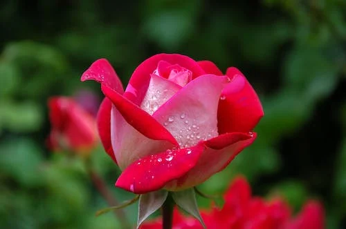

Welcome to Flower Paradise
This is your go-to place for information about the most popular flowers on Earth.
Roses
Roses are one of the most beloved flowers, known for their beauty and fragrance. With a rich history dating back thousands of years, roses have been symbols of love, passion, and mystery.
Ancient Greeks and Romans associated roses with their goddesses of love, Aphrodite and Venus. Over the centuries, roses have continued to captivate hearts worldwide, becoming an iconic symbol in various cultures and traditions.
Tulips

Tulips are known for their vibrant colors and elegant appearance, making them a symbol of beauty and grace. Originating from Central Asia, tulips gained popularity in the Ottoman Empire in the 16th century before spreading across Europe during the Tulip Era.
The fascination with tulips reached its peak during the Dutch Golden Age, leading to the famous "Tulip Mania." Despite the economic bubble, tulips continue to be cherished for their enchanting allure, with each color carrying its own unique significance.
Lilies

Lilies are exquisite flowers known for their symbolic meanings of purity, renewal, and transience. With a history dating back to ancient civilizations, lilies have been featured in art, literature, and religious ceremonies, representing various cultural and spiritual aspects.
In Christian traditions, lilies symbolize the resurrection, while in Greek mythology, they are associated with the goddess Hera. The diverse varieties of lilies showcase a wide range of colors and patterns, captivating admirers with their timeless elegance.
Sunflowers

Sunflowers are iconic for their bright yellow petals and distinctive appearance, evoking feelings of warmth and positivity. Native to North America, these flowers have been cultivated for centuries, with Native American tribes appreciating their nutritional and symbolic value.
Van Gogh's famous "Sunflowers" paintings further immortalized these blooms in art history. Sunflowers are not only aesthetically pleasing but also carry meanings of loyalty, adoration, and a connection to the sun's life-giving energy.
Orchids

Orchids are exotic and diverse flowers, symbolizing beauty, love, and refinement. With over 25,000 species, orchids are found on every continent except Antarctica, thriving in various climates and ecosystems. Their intricate and delicate appearance has made them a sought-after choice in floral arrangements.
Orchids hold cultural significance in many societies, representing fertility, luxury, and strength. These captivating flowers have inspired art, literature, and even scientific exploration, as enthusiasts are drawn to the mystery and elegance surrounding the orchid family.
About Us
Flower Paradise is a passionate company dedicated to exploring the beauty and history of flowers. We believe in sharing the enchanting stories behind each blossom, connecting people to the wonders of nature.
Our team of botanists, historians, and flower enthusiasts work tirelessly to bring you fascinating insights into the world of flowers. Join us on this floral journey and discover the hidden tales that make each petal unique.